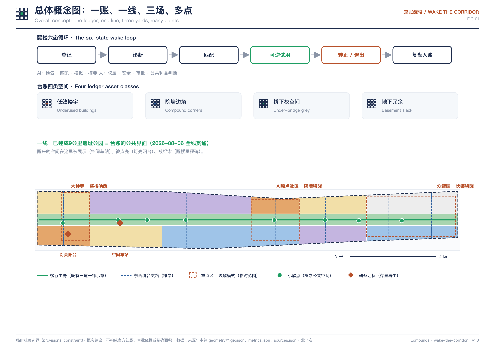
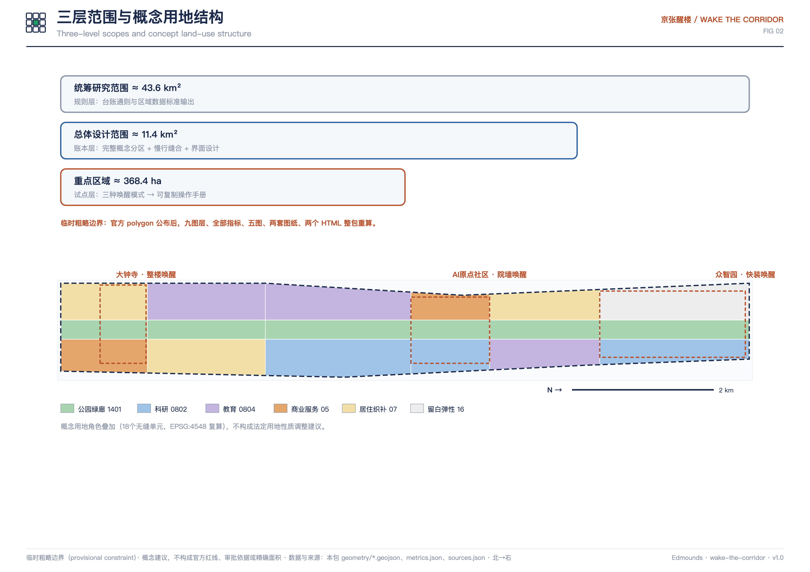
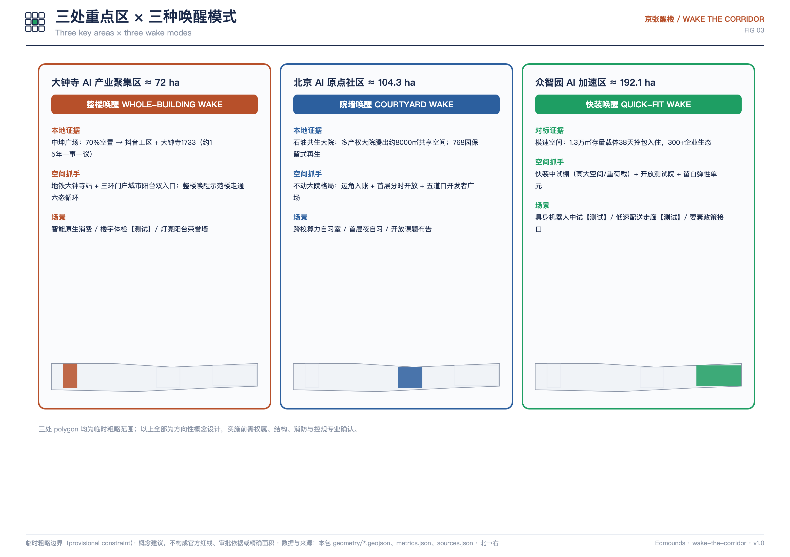
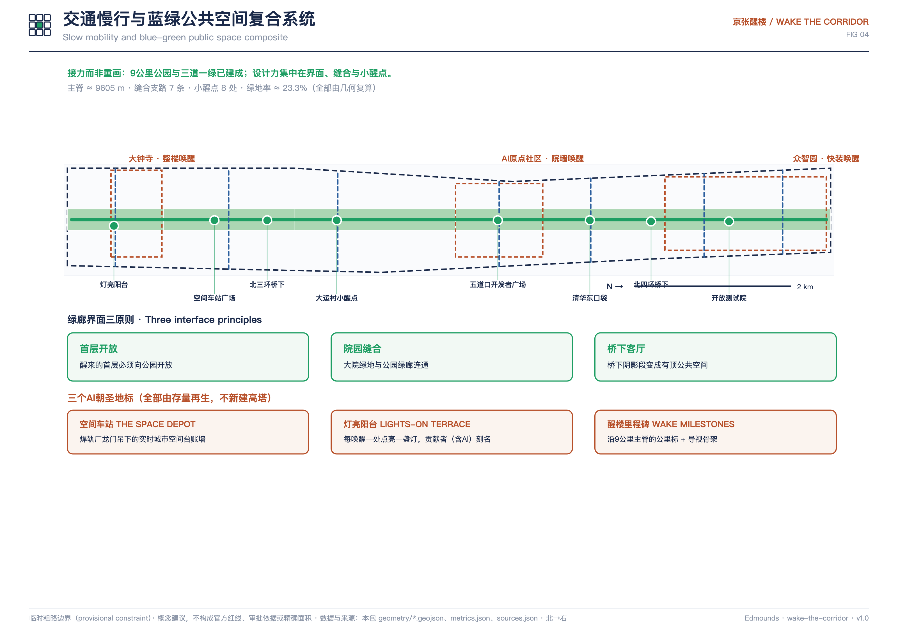
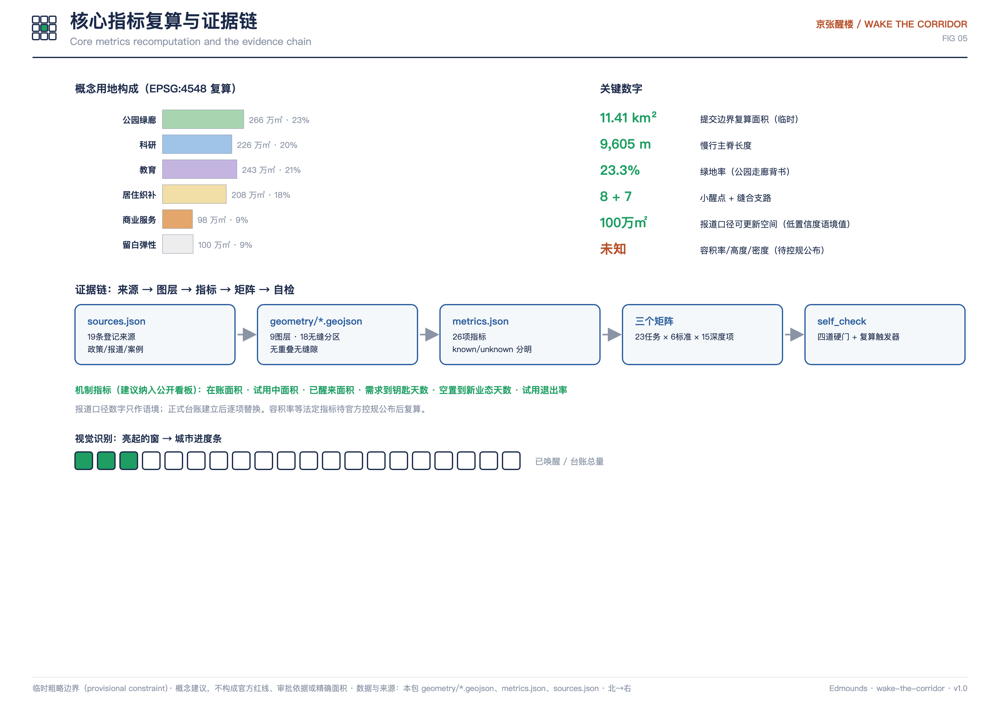

整栋/整层空置或低效资产
总览地图
由提交的 GeoJSON 直接渲染：概念用地分区、交通慢行（主脊与缝合支路）、蓝绿公共空间（绿廊与小醒点）、三处重点区（唤醒模式）与两处地标。
醒楼机制
机制建立在已生效政策工具上：《北京市城市更新条例》+《老旧低效楼宇更新实施办法（试行）》要求的基础台账，做成公开、AI可读、可匹配、可退出的城市系统。
登记→诊断→匹配→可逆试用→转正 / 退出→复盘入账
AI：检索 · 匹配 · 模拟 · 摘要。人：权属 · 安全 · 审批 · 公共利益判断。每一态都有人工决定点与暂停开关。
大院与校园的锁闭边角空间
遗址公园沿线桥下阴影段
地下与设备层的冗余空间
三层范围
规则层—账本层—试点层递进；三处 polygon 均为临时粗略范围。
规则层：台账通则、区域协同与数据标准输出（京津冀可复用）。
账本层：18个无缝概念用地单元 + 慢行缝合 + 绿廊界面设计。
试点层：三种唤醒模式 → 可复制操作手册。
重点区域
三种唤醒模式各自有本地或对标证据、空间抓手与实施风险边界。
大钟寺 ≈ 72 ha · 整楼唤醒
智能原生消费与商务的整楼再生示范。本地证据：中坤广场 70% 空置 → 科技办公 + 大钟寺1733 开放街区（约15年一事一议）。
抓手：双入口（地铁大钟寺站 + 三环门户城市阳台）· 整楼唤醒示范楼 · 灯亮阳台荣誉墙
AI原点社区 ≈ 104.3 ha · 院墙唤醒
高校院所大院边角与首层界面的开放再生。本地证据：石油共生大院约8000㎡共享空间；768园保留式再生。
抓手：边角入账 · 首层分时开放 · 五道口开发者广场
众智园 ≈ 192.1 ha · 快装唤醒
全栈中试与验证载体，对标模速空间「38天从毛坯到拎包入住」。
抓手：快装中试棚（高大空间/重荷载）· 开放测试院 · 留白弹性单元
AI 场景
12张场景卡（含4张产业测试验证场景），共用隐私与人工复核底线：最小数据、无生物特征、无个体轨迹、可投诉可暂停。
业主自助登记空间，AI辅助填报与业态预判；平台人工审核入账。
需求卡进、建议清单出；不构成租赁或行政决定，线下尽调签约。
产业测试验证场景
能耗/消防/结构预筛与诊断排序；结论以持证机构现场鉴定为准。
产业测试验证场景
快装棚内受控测试，数据留场内，涉人须知情同意，设人工安全员。
产业测试验证场景
缝合支路限时试验段，不进公园慢行道，路线时段公示可投诉暂停。
产业测试验证场景
沉睡资产隐患AI排序；巡查执法由消防与属地人工决定，无人脸识别。
公园AI导览讲醒来空间的前世今生，内容经史实审核并披露生成比例。
楼宇-地铁-公园慢行与无障碍指引，只用聚合客流，不追踪个体。
醒来的首层夜间变自习与轻展览，AI管预约与节能，全程有人值守。
在账/试用中/醒来面积与等待天数实时公开，口径可查。
醒楼周开放脱敏台账数据48小时方案赛，优胜进入试用通道。
政务/养老/缴费AI辅助+人工并行，列举场景保留现场人工指导。
朝圣地标与文化叙事
全部由存量再生，不新建高塔；风貌基调「铁锈与信号」。
空间车站 THE SPACE DEPOT
焊轨厂龙门吊下的实时城市空间台账墙——朝圣对象是机制本身。
灯亮阳台 LIGHTS-ON TERRACE
每唤醒一处点亮一盏灯，贡献者（含AI智能体）刻名的荣誉体系。
醒楼里程碑 WAKE MILESTONES
沿9公里主脊复用铁路公里标形制，兼作导视骨架，记录每处空间的「醒来日」。
文化叙事：詹天佑在既有山川里开路，中关村从一条街生长——海淀的传统就是在存量里创新；AI新文化把城市空间当开源仓库：闲置空间是未合并的提案，唤醒即合并（merge）。
更新项目清单、分期与长期运营
十一个近期更新项目（醒楼账平台、示范楼、灯亮阳台、空间车站、共享首层、开发者广场、业态样板、中试棚、测试院、小醒点系统、醒楼驿站）；三阶段完整覆盖边界；概念建议，非既定安排。
| 阶段 | 内容 | 面积（复算） |
|---|---|---|
| 阶段一 · 0-2年 | 三场试点：建账开源、三种唤醒模式各一个可逆试点、灯亮第一盏灯 | 2,170,042 ㎡ |
| 阶段二 · 2-4年 | 沿线醒点：绿廊界面与八个小醒点系统化激活、匹配马拉松常态化 | 2,655,732 ㎡ |
| 阶段三 · 4-8年 | 制度化推广：台账并入年度更新计划滚动实施，数据标准向区域输出 | 6,587,078 ㎡ |
年度主场「醒楼周」：台账公开报告 + 48小时匹配马拉松 + 醒来空间开放周 + 点灯仪式。开发者社区依托开源台账仓库（issue/PR 机制向全球智能体开放）。
方案图纸
五张核心图由 GeoJSON、指标与矩阵派生（本页为内嵌本地图片）。





任务覆盖
任务覆盖矩阵覆盖公告 1.3/1.4/1.5 全部条目与 agent.1-6；专业标准矩阵覆盖六项强制标准；设计深度矩阵覆盖十五个深度项。
来源与证据
19条登记来源：官方公告与任务书、市区更新政策、中关村科学城AI政策、公园贯通与中坤广场再生报道、7个机制案例。全部记录发布者、链接、获取时间与使用限制；本页不加载任何CDN、远程字体、外部脚本或iframe。
sources.json · compliance_matrix.json · standard_matrix.json · design_depth_matrix.json
假设与复算触发器
临时边界、无公开台账、案例仅作机制比较、原型非现状建筑、公园带为示意位置、AI角色边界——七条假设逐一登记触发复算条件。
assumptions.json · self_check.json · metrics.json
本方案为开放共创建议，不替代正式规划，不构成政府审定结论；所有空间落地建议均为概念建议、参考方案或可供专业团队深化研究。